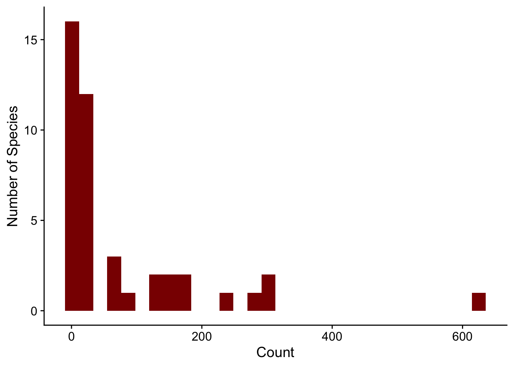
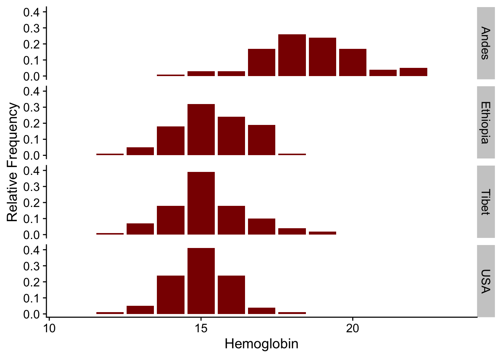
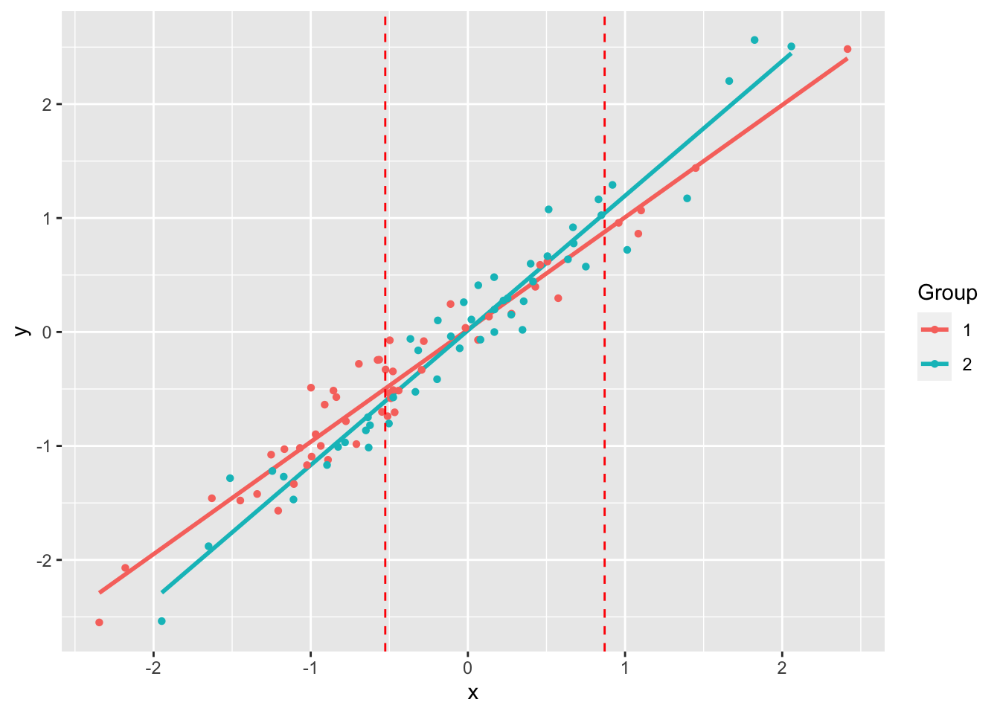

Software
Code for most lab projects is available either on the lab GitHub page or my personal GitHub page.
abd: Analysis of Biological Data
Collaborating with Randall Pruim (Calvin College), I co-developed an R package (abd) to accompany the first edition of The Analysis of Biological Data by Michael Whitlock and Dolph Schluter. This is an excellent textbook (now in its second edition, still remarkably inexpensive) for teaching advanced undergraduate and introductory graduate statistics. The new edition of this book has associated R code, mostly making this package redundant. But I still like having the datasets from the book handy. I use them for teaching and demos really often, like the distribution of counts of desert birds or hemoglobin levels in different populations.
library(ggplot2)
library(abd)
ggplot(DesertBirds, aes(count)) +
geom_histogram(bins = 30, fill = "darkred") +
labs(x = "Count", y = "Number of Species") +
cowplot::theme_cowplot()
library(ggplot2)
library(abd)
ggplot(Hemoglobin, aes(x = hemoglobin, y = relative.frequency)) +
geom_bar(stat = "identity", fill = "darkred") +
labs(x = "Hemoglobin", y = "Relative Frequency") +
facet_grid(group ~ .) +
cowplot::theme_cowplot()
Installation
The package can be installed via CRAN
install.packages("abd")or directly from GitHub:
remotes::install_github("Middleton-Lab/abd")We have had a lot of dependency creep over the years, so the number of packages that get installed alongside abd can be quite large.
jnt: Johnson-Neyman Technique
The Johnson-Neyman technique is used to determine the region of an analysis of covariance where the slopes are not significantly between the covariate. This allows the determination of bounds of a region of “equal” slope despite the presence of a “significant” slope (by whatever definition of “significant” you choose).
We used this approach in Lavin SR, Karasov WH, Ives AR, Middleton KM, Garland T Jr (2008) Morphometrics of the avian small intestine compared with that of nonflying mammals: A phylogenetic approach. Physiol Biochem Zool 81: 526-550.
References
- Johnson PO and Neyman J (1936) Tests of certain linear hypotheses and their application to some educational problems. Statistical Research Memoirs 1: 57-93.
- Hunka S and Leighton J (1997) Defining Johnson-Neyman regions of significance in three-covariate ANCOVA using Mathematica. Journal of Educational and Behavioral Statistics 22: 361-387.
- White CR (2003) The influence of foraging mode and arid adaptation on the basal metabolic rates of burrowing mammals. Physiol Biochem Zool 76: 122-134.
- White CR (2003) Allometric analysis beyond heterogenous regression slopes: Use of the Johnson-Neyman Technique in comparative biology. Physiol Biochem Zool 76: 135-140.
Demo
library(jnt)Loading required package: smatrset.seed(1234)
n <- 50
x1 <- rnorm(n)
y1 <- x1 + rnorm(n, sd = 0.2)
x2 <- rnorm(n)
y2 <- 1.25 * x2 + rnorm(n, sd = 0.2)
df1 <- data.frame(x = x1, y = y1)
df2 <- data.frame(x = x2, y = y2)
(jnt.out <- jnt(df1, df2))Fitting with OLSAssuming x variable is column 1, and y is column 2.
Johnson-Neyman Technique
Alpha = 0.05
Data 1:
Slope 0.9853
Intercept 0.02126
Data 2:
Slope 1.182
Intercept 0.01386
Region of non-significant slope difference
Lower: -0.5258
Upper: 0.8701 plot(jnt.out)`geom_smooth()` using formula 'y ~ x'
Installation
jnt can be installed directly from GitHub:
remotes::install_github("Middleton-Lab/jnt")MuscleTernary: Ternary plots for 3D data
Installation
MuscleTernary can be installed directly from GitHub:
remotes::install_github("Middleton-Lab/MuscleTernary")binning: Binning for mouse wheel activity data
Installation
binning can be installed directly from GitHub:
remotes::install_github("Middleton-Lab/binning")